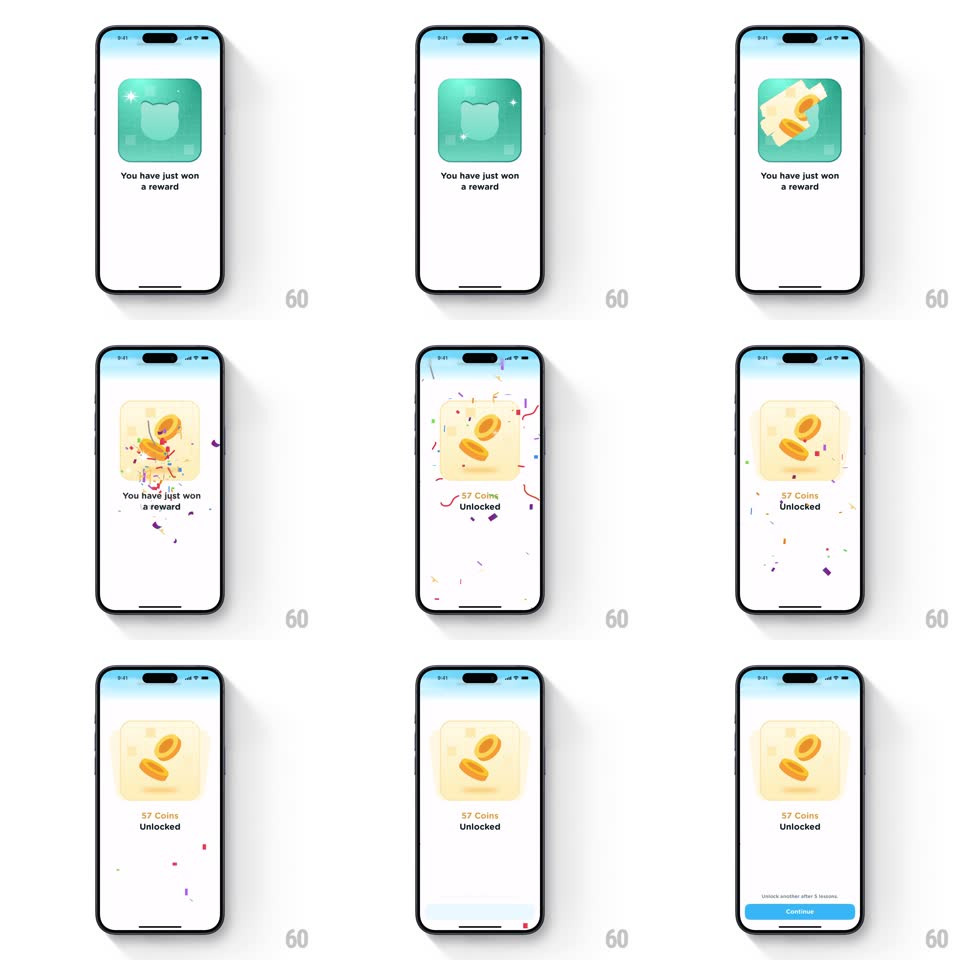

Media
Frame-by-frame

Rebuild this interaction 1:1: Airlearn's scratch-to-reveal reward - a teal scratch card sparkles, scratches away to reveal coins, then a confetti burst fills the screen as the "57 Coins Unlocked" count lands and a Continue button slides in.

Rebuild this interaction 1:1: Airlearn's scratch-to-reveal reward - a teal scratch card sparkles, scratches away to reveal coins, then a confetti burst fills the screen as the "57 Coins Unlocked" count lands and a Continue button slides in. ## Integration Integration: stack-agnostic spec - springs given as stiffness/damping, timed motions as duration + curve; map every value to your framework and animation library of choice. ## Scene Mobile screen, light gradient background (white to pale blue at top). Centered: a square reward card (~rounded 20px) with "You have just won a reward" beneath it. Card starts as a solid teal scratch surface with a cat-shaped mask cutout and sparkle glints. Bottom: blue Continue button (appears only at the end). ## Motion spec Pattern: staged scratch reveal with confetti payoff. - Idle: sparkles twinkle across the teal scratch surface (3-4 star glints, fade/scale in-out, staggered ~300ms apart, looping). - Scratch-off: the teal layer erases in irregular strokes (mask reveal, ~800ms), exposing a cream ticket with two gold coins. - On full reveal: confetti burst - 40-60 small rects and circles (purple, orange, green, pink) eject from the card center with random angles, gravity, and tumble (~1.5s to fall off-screen). - Simultaneously the coin ticket pops (scale 0.8 -> 1, spring ~240/18) and "57 Coins / Unlocked" fades in below (200ms). - Continue button slides up and fades in at the bottom (translateY 20px -> 0, 300ms, 400ms after the burst). ## Calibration - The erase must read as scratching - irregular edge mask, not a rectangular wipe. - Confetti starts exactly when the scratch completes; the two beats should feel chained. ## Reduced motion Card crossfades to the revealed ticket (250ms); static confetti-free state; Continue fades in. ## Don't miss - The ticket under the scratch layer is cream/off-white with a perforated-ticket edge feel, not plain white. - Coins on the ticket sit at a slight random tilt; they are part of the reveal art, not separate sprites.